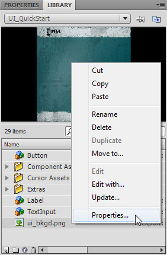
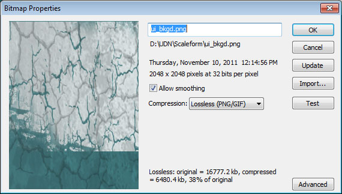
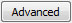
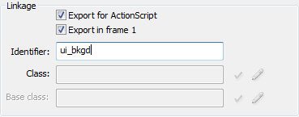
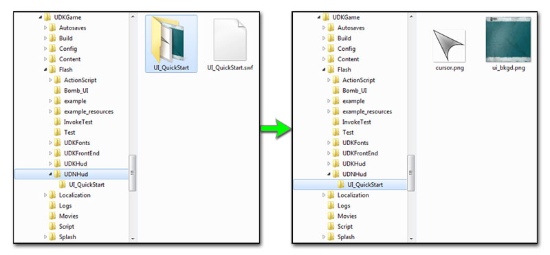
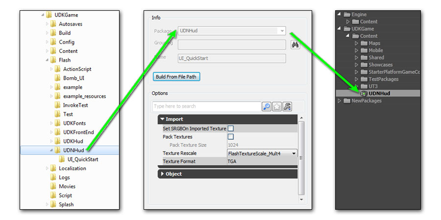
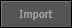
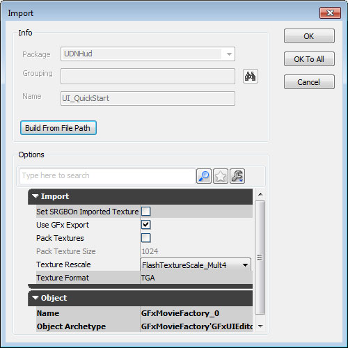
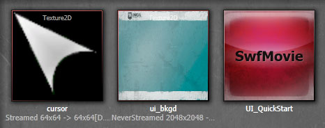

UDN
Search public documentation:
ScaleformQuickStart
日本語訳
中国翻译
한국어
Interested in the Unreal Engine?
Visit the Unreal Technology site.
Looking for jobs and company info?
Check out the Epic games site.
Questions about support via UDN?
Contact the UDN Staff
中国翻译
한국어
Interested in the Unreal Engine?
Visit the Unreal Technology site.
Looking for jobs and company info?
Check out the Epic games site.
Questions about support via UDN?
Contact the UDN Staff
Scaleform GFx Quick Start
Overview
Setting up the Scene
| Example Files |
|---|
| UI_QuickStart - Part 1 |
| UI_QuickStart - Part 2 |
| UI_QuickStart - Part 3 |
| UI_QuickStart - Part 4 |
| UI_QuickStart AS3 version (part 1 of 2) |
| UI_QuickStart AS3 version (part 2 of 2) |
- Select the cursor movieclip and press F9 to open the ActionScript editor.
- Add the code below:
onClipEvent(enterFrame) { _X = _root._xmouse; _y = _root._ymouse; }
- Select the image in the Library panel, right-click on it, and choose Properties.
 - In the Bitmap properties dialog, check Allow Smoothing and set Compression to Lossless (PNG/GIF).
 - Click the  to display the advanced properties.
- In the Linkage section, enable Export for ActionScript and in the Identifier field, remove the file extension from the name of the image (including the period).
 - Click the button to save the changes.
- Finally, the original source image files should be placed in a folder with the same name as the SWF file (in the same directory as the SWF file).

Importing the Scene
[GameName]\Flash directory within a folder with the name of the package you would like the .swf imported into in Unreal. This folder corresponds directly to the package the .swf will be imported into and cannot be changed at import time. You can optionally have subfolders within this package folder that represent groups within the package.

The easiest way to ensure the published .swf ends up in the correct location is simply to save the actual Flash file (.fla) to the desired location initially. The published file will be placed alongside it by default.
After the scene has been published, you can import it into Unreal through the Content Browser inside of UnrealEd or by using the GFXIMPORT commandlet. For this example, importing through the Content Browser will work fine.
- Open Unreal Editor, go to the Content Browser, and click the  button.
- Change the file type filter on the file browser that appears to SWF Movie (.swf) and navigate to the location of your published .swf file.
- Select the file and click the button.
- In the Import dialog, the Package, Group, and Name fields will all be filled in and grayed out.

The default settings should work fine here. Click the button to import the scene. - Once the import process is finished, the SWF and any images it contained should all be visible in the Content Browser.

Hooking up the Scene
Movie property, which it can then receive events from and pass commands to as well as accessing elements within the associated UI.
Please see Custom UnrealScript Projects for information on how to add a new UnrealScript project if you are just starting out.
The basic process that occurs is:
- The movie player starts the movie -
Start() - The movie player is initialized -
Advance()- WidgetInitialized called for all elements that have enableInitCallback enabled
- References are saved to needed widgets - any object in the scene we need to access should have a reference saved
- Delegates are assigned for click events on buttons - Widget bindings are used so the Widget passed to WidgetInitialized for the buttons is a GFxCLICKWidget which can have event listeners added
- Delegates are called when buttons are clicked
- SaveButton - Message changes using player entered info
- ExitButton - The UI is closed
class UIScene_Profile extends GFxMoviePlayer; /** Reference to the label used to display the message on the UI */ var GFxObject MessageLabel; /** Reference to the text field used to enter the player's name */ var GFxObject PlayerText; /** Reference to the text field used to enter the player's title */ var GFxObject TitleText; /** Reference to the text field used to enter the player's clan */ var GFxObject ClanText; /** Reference to the button used to save the profile info - must add a widget binding since we expect a GFxCLIKWidget */ var GFxCLIKWidget SaveButton; /** Reference to the button used to close the UI - must add a widget binding since we expect a GFxCLIKWidget */ var GFxCLIKWidget ExitButton; // Called when the UI is opened to start the movie function bool Start(optional bool StartPaused = false) { // Start playing the movie Super.Start(); // Initialize all objects in the movie Advance(0); return true; } // Callback automatically called for each object in the movie with enableInitCallback enabled event bool WidgetInitialized(name WidgetName, name WidgetPath, GFxObject Widget) { // Determine which widget is being initialized and handle it accordingly switch(Widgetname) { case 'messageLabel': // Save reference to the label that displays the message to the player MessageLabel = Widget; break; case 'playerText': // Save reference to the text field for the player's name PlayerText = Widget; break; case 'titleText': // Save reference to the text field for the player's title TitleText = Widget; break; case 'clanText': // Save reference to the text field for the player's clan ClanText = Widget; break; case 'saveButton': // Save reference to the button that saves the profile info // the Widget is cast to a GFxCLIKWidget to allow for event listeners - see WidgetBindings SaveButton = GFxCLIKWidget(Widget); // Add a delegate for when this button is clicked SaveButton.AddEventListener('CLIK_click', SavePlayerData); break; case 'exitButton': // Save reference to the button that closes the UI // the Widget is cast to a GFxCLIKWidget to allow for event listeners - see WidgetBindings ExitButton = GFxCLIKWidget(Widget); // Add a delegate for when this button is clicked ExitButton.AddEventListener('CLIK_click', CloseMovie); break; default: // Pass on if not a widget we are looking for return Super.WidgetInitialized(Widgetname, WidgetPath, Widget); } return false; } // Delegate added to change the message using the data entered //In a real game situation, the data would be saved somewhere function SavePlayerData(EventData data) { // Only on left mouse button if(data.mouseIndex == 0) { // Set the text property of the message label using the profile info entered MessageLabel.SetString("text", "Welcome,"@PlayerText.GetString("text")@"("$TitleText.GetString("text")@"in"@ClanText.GetString("text")$")"); } } // Delegate added to close the movie function CloseMovie(EventData data) { // Only on left mouse button if(data.mouseIndex == 0) { // Close the UI Close(); } } defaultproperties { // The imported SWF to use MovieInfo=SwfMovie'UDNHud.UI_QuickStart' // Set widget bindings so the Widget passed to // WidgetInitialized for the buttons is a GFxCLICKWidget WidgetBindings.Add((WidgetName="saveButton",WidgetClass=class'GFxCLIKWidget')) WidgetBindings.Add((WidgetName="exitButton",WidgetClass=class'GFxCLIKWidget')) // Set properties for the movie // TimingMode=TM_Real makes the menu run while the game is paused bDisplayWithHudOff=TRUE TimingMode=TM_Real bPauseGameWhileActive=TRUE bCaptureInput=true }
Testing the Scene
- Add a Level Loaded (New Event > Level Loaded) event and a Open GFx Movie action (New Action > GFx UI > Open GFx Movie).
- Connect the Beginning of Level output of the Level Loaded event to the In input of the Open GFx Movie action.
- Select the imported SWF in the Content browser and in the Open GFx Movie action's properties press the button for the Movie property to assign the SWF.
- Set the Movie Player Class to the class from the previous section,
UIScene_Profilein this case. This is the class that will drive the movie assigned in the previous step. - Enable the Take Focus and Capture Input properties (assuming this is a menu and not a HUD) so the menu will be focused and accepting input.
- UI_QuickStart_AS3.part1.rar: AS3 version of UI_QuickStart
- UI_QuickStart_AS3.part2.rar: AS3 Version of UI_QuickStart